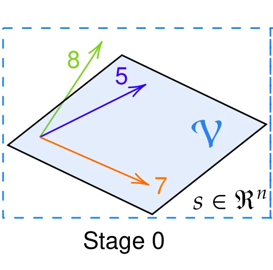

Toy geometry of successful and failed anomaly detection. The shaded plane is the join \(\mathcal V\) of two nominal subspaces. Click any panel to enlarge.
Abstract
Reconstruction-based unsupervised learning can fail in two opposing ways: a model may reconstruct anomalies too accurately or discard valid nominal variation. Using the Pursuit of Subspaces hypothesis, we characterize these failures through the meet, union, and join geometries induced by the nominal components. Excess learned range produces join blindness, while insufficient capacity produces meet preference and loss of nominal fidelity. We show that the compact nominal union is optimal among nominal faithful ranges and generally requires a nonlinear reconstruction map. Based on this geometry, we introduce Dynamic Push and Pull, which learns from controlled perturbations without anomaly labels, and nested manifold carving, which applies the same principle recursively in latent space. Experiments confirm the predicted changes in latent geometry across every tested Push and Pull configuration. The proposed methods improve reconstruction-based anomaly detection across standard benchmarks and unseen image degradations, while also improving pretrained ECG representations for downstream classification. These results connect reconstruction failures to identifiable geometric conditions and provide practical mechanisms for learning compact representations.
16 / 16Push and Pull configurations show both predicted latent dynamics plain AE: 7 / 16
Background
Pursuit of Subspaces, in four postulates
This work builds on the Pursuit of Subspaces (PoS) hypothesis, a postulate-based geometric account of representation learning. Its four idealized, falsifiable postulates describe what a well-trained encoder–decoder module should do:
P1 · Geometric compaction. Learning refines a candidate data manifold into a structured target: a union of lower-dimensional component manifolds \(\mathcal M=\bigcup_i \mathcal M_{D_i}\).
P2 · Nonlinear orthogonal projection. The module acts as an idempotent projector \(P_{\mathcal M}=f_D\circ f_E\) onto \(\mathcal M\), so \(P_{\mathcal M}^2=P_{\mathcal M}\).
P3 · Normal-space removal. The projection removes a normal-space component, \(\hat s=s-P^{\perp}_{\mathcal M}(s)\). The identity path keeps \(s\) and the residual branch estimates what to remove.
P4 · Nested projections through depth. P1–P3 repeat at every level, so depth gives a hierarchy of progressively refined nonlinear projections.
PoS explains how an established projection is preserved when a network grows. This paper asks the open question that comes before it: which learning mechanisms push a module toward nonlinear orthogonal projection onto a compact union of submanifolds in the first place?
Theory
Reconstruction fails in two opposite ways
Locally, describe the nominal components by tangent subspaces \(S_i\). Three objects follow from them: the meet\(\mathcal W=\bigcap_i S_i\) (directions every component shares), the union\(\mathcal U=\bigcup_i S_i\) (the nominal data itself), and the join\(\mathcal V=\sum_i S_i\) (the smallest linear space containing them all). Because \(\mathcal W\subseteq\mathcal U\subseteq\mathcal V\), set inclusion reverses distance:
A reconstruction loss constrains the model on nominal samples only. Nothing stops the learned range from expanding toward the join \(\mathcal V\). An anomaly in \(\mathcal V\setminus\mathcal U\) is then reconstructed almost perfectly and goes undetected (panel b). The model loses selectivity.
Too much range → false negatives
Prediction II · Meet preference
With limited capacity, a model preferentially keeps the shared directions \(\mathcal W\) and drops component-specific ones. Nominal points in \(\mathcal U\setminus\mathcal W\) now get positive errors (panel d). The model loses fidelity.
Too little range → false positives
The target is the compact union, and it needs nonlinearity
Among all ranges that keep nominal data intact, the compact union \(\mathcal U\) maximizes the separation between nominal and anomalous scores. But a linear map whose range contains \(\mathcal U\) must contain the whole join \(\mathcal V\). Reconstruction alone also never steers the range toward \(\mathcal U\). Learning the compact union therefore takes two ingredients: nonlinearity and an explicit separation signal (panel c). The two methods below supply that signal.
Method
Dynamic Push and Pull
Take a nominal sample \(s_n\), perturb it to \(\tilde s_n=s_n+e\), and reconstruct \(\hat s_n=P_\theta(\tilde s_n)\). The reconstruction is pulled toward the clean sample and pushed away from the perturbed input by a margin that scales with the perturbation's size \(\delta_e=d(\tilde s_n,s_n)\):
Training keeps the ordinary reconstruction loss on clean nominal samples and adds this term: \(\mathcal L_{\text{train}}=\mathcal L_{\text{AE}}+\lambda_{\text{PP}}\,\mathbb E[\mathcal L_{\text{PP}}]\). No anomaly examples or class labels are used. With \(\alpha=0\) the push vanishes and the objective reduces to a denoising autoencoder. The push hinge is what carves away the excess range behind join blindness.
(a) If \(s_n\in\mathcal U\) and \(e\) is normal to \(\mathcal U\), exact pull gives \(\hat s_n=s_n\). For \(\alpha\le 1\) the push is inactive at this optimum but supplies a gradient whenever its margin is violated.
(b) If \(s_n\) sits a distance \(\eta>0\) off the union, margins \(\alpha>1\) become admissible and impose a constraint pull alone cannot.
The guarantee is local to the sampled perturbations. To suppress join blindness across \(\mathcal V\setminus\mathcal U\), the perturbation sampler has to probe that region.
Nested manifold carving
Following P4, push–pull is applied again, this time in latent space. The Stage-0 encoder and decoder are frozen. A new encoder–decoder pair is trained on the Stage-0 latent with the same objective, and its output is decoded back through the frozen decoder. Each level carves the range it inherits, while the pull term keeps nominal coverage. Under the paper's ideal conditions the ranges shrink monotonically onto the union: \(\overline T^{(1)}\supseteq\overline T^{(2)}\supseteq\cdots\supseteq\mathcal U\).

Geometric reading of the two-stage MNIST experiment with nominal digits {4, 5, 7}. Click a step, or use the arrow keys when a step is focused.
Predict, then measure
The predicted geometry shows up in the data
Different stages catch different anomalies
The paper's controlled MNIST study (nominal digits 4, 5, 7) does what the figure above predicts. Digit 8 produces a large image error but a small Stage-1 latent error: Stage 0 already removed its anomalous direction. Digit 1 produces a small image error but a large latent error: it survived Stage 0 inside \(\mathcal V\setminus\mathcal U\) and nested carving exposed it. Its Stage-1 reconstructions turn predominantly 7-like.
Representative reconstructions at successive stages. Left: 8 is mapped toward 5 at Stage 0 and stays there. Right: 1 survives Stage 0 and is projected toward 7 by nested carving.
Push and Pull, not capacity, drives the gain
Configuration
F1
ROC-AUC
PR-AUC
Bouman–Heskes baseline
0.693
0.866
0.936
Higher-capacity AE
0.780
0.893
0.962
AE + mask
0.766
0.881
0.957
AE + PP
0.792
0.897
0.963
AE + nested + PP
0.798
0.909
0.967
AE + nested + PP + sparsity
0.808
0.928
0.972
AE + nested + PP + mask + sparsity
0.815
0.929
0.973
Nominal digits {4, 5, 7}. The baseline reproduces Bouman & Heskes with a 2-D bottleneck. All other rows use a 9-D Stage-0 latent. A reconstruction-only nested module adds nothing because it admits an identity solution. Push and Pull supplies the separation signal that makes nesting useful.
Latent dynamics match PoS in every PP run
Moving to a more compact representation, PoS predicts that nominal components separate (their radii shrink faster than the distances between their centres) and that off-union anomalies move toward the nominal union. Across 4 nominal-digit sets × 2 masking × 2 sparsity choices:
A side effect PoS also predicts: as nominal structure tightens and anomalies are pulled toward it, a more compact network can give worse features to a downstream classifier that must separate the two.
Results
Standard one-class anomaly detection
We train on nominal samples only and follow the TOLL validation protocol. All three arms share TOLL's Stage-0 autoencoder and optimization settings. AE is that backbone trained for reconstruction only (compactness coefficient \(\beta=0\)). AE-PP adds Dynamic Push and Pull. AE-PoS adds nested manifold carving on the frozen AE-PP Stage 0. Scores are mean ± std over 10 seeds and every nominal class.
Dataset
Metric
AE
AE-PP
AE-PoS
Gain over AE
MNIST
AUC-ROC
94.74 ± 4.65
99.38 ± 0.42
99.35 ± 0.51
+4.64
Fashion-MNIST
AUC-ROC
91.60 ± 5.34
94.83 ± 3.95
94.87 ± 4.04
+3.27
CIFAR-10
AUC-ROC
68.96 ± 7.29
71.30 ± 6.70
71.73 ± 6.60
+2.77
CIFAR-100
AUC-ROC
65.42 ± 9.09
68.56 ± 8.89
68.87 ± 8.97
+3.45
Arrhythmia
F1
60.77 ± 7.26
67.69 ± 5.75
70.77 ± 5.75
+10.00
Gain is best of ours minus AE, in percentage points. Stage 1 helps most when the Stage-0 representation still holds several components (Arrhythmia, CIFAR-10, multi-digit MNIST). It mostly preserves performance when Stage 0 is already compact (single-class MNIST, Fashion-MNIST).
Against published baselines
Ours
Published baselines
The push margin \(\alpha\) saturates, as predicted
Once the push hinge is active for most training pairs, its gradient no longer depends on \(\alpha\), so performance should plateau. It does, at \(\alpha=2\) or \(3\), on all five datasets. \(\alpha=0\) keeps pull and disables push (a denoising AE).
AE-PP (Stage 0)
AE baseline
α selected on validation
Show α sweep as a table
Results
Detecting unseen image degradations
Here the task is nominal-only and real-world: learn a high-fidelity model of clean, high-quality images, then flag degraded ones it has never seen. Training perturbations are limited to parametric blur kernels, sensor noise, resampling and JPEG. Realistic motion blur (REDS, GoPro), rain and underwater degradations appear only at test time. Kodak24 Gaussian noise is an in-family control.
Unweighted mean over the settings in each family (count in parentheses). Parameters: AE 0.83M, SD-VAE 83.7M, AE-PP 0.83M, AE-PoS 1.67M. The hairline at 0.5 is chance.
Show as a table
Why the VAE goes below chance: it reconstructs blur better than clean images
The pretrained SD-VAE regularizes its latent probabilistically, which costs fidelity on clean images and favours low-frequency content. Under strong blur its reconstruction gets more accurate, so blurred anomalies score lower than clean images and the score ordering flips. AE-PoS keeps nominal detail and excludes blur from its target set, so the residual grows with blur. Drag the slider to compare.
0.20.40.60.81.0
Input blurredAE SD-VAE AE-PoS
One REDS scene. PSNR is between the input and its reconstruction (higher means the model represents the input better). Clean-image PSNRs for the same scene: AE 62.4, SD-VAE 27.6, AE-PoS 43.9 dB. All residuals share one intensity gain, so the AE residual is near-black: it reproduces the blur almost exactly.
PSNR (dB)
AE
SD-VAE
AE-PP
AE-PoS
Clean
63.04
27.59
43.42
43.07
Blur 1.0
62.72
37.01
30.51
31.79
Δ
−0.32
+9.42
−12.91
−11.28
Averaged over the REDS set at the strongest blur. The VAE is the only model whose reconstruction improves under blur, which explains its ROC-AUC below 0.5.
The plain AE has the opposite problem. It reconstructs clean and degraded inputs at about 60 dB, so its residuals carry almost no signal. That is join blindness at image scale: high fidelity, no selectivity.
Nominal fidelity and degradation rejection, side by side
Nested carving is a general unsupervised representation-learning strategy, not just an anomaly detector. Expert ECG labels are costly, but unlabelled recordings are plentiful. We pretrain on 164,972 unlabelled ECGs (Ningbo + CODE-15), freeze the encoder, and train only a linear diagnostic classifier on top. The Stage-1 inner autoencoder is trained on representations of the same pool, so it sees no extra data.
Signal \(s\)
Frozen encoderST-MEM d6 / w768
Latent \(x\)
Inner autoencoderStage 1 · push–pull
Outer decoderST-MEM d4 · fine-tuned
Reconstruction
Encoder
PTB-XL
ICBEB
Super
Sub
Form
Rhythm
CPSC2018
ECG-CPC
0.8630
0.8860
0.8730
0.9380
0.9020
ECG-FM
0.8730
0.8660
0.7820
0.8650
0.9060
MERL
0.8870
0.8950
0.8640
0.8770
0.9140
ST-MEM
0.8954
0.8935
0.8548
0.9463
0.9559
Stage 0 (ours)
0.8969
0.8917
0.8523
0.9449
0.9530
Stage 1 (ours)
0.9136
0.9277
0.8825
0.9482
0.9623
Frozen-encoder AUROC with a linear probe. Stage 0 and Stage 1 are depth-controlled. Nested carving improves all five tasks. These experiments evaluate representation learning and do not establish clinical diagnostic validity.
Reproduce
Code, configs and checkpoints
The code repository is not public yet; it will open with the code release. Checkpoints and evaluation images are already available on OneDrive.
The PoS Toolbox builds networks from the PoSModule (pre-processing Tin → subspace → post-processing Tout, nestable to any depth). It ships the exact configs behind every table. Checkpoints include 1,530 one-class models (10 seeds × every nominal class) and the 3 image models. The image evaluation sets are on OneDrive.
git clone https://github.com/ArtificialBrainStudio/PoS-Toolbox.git
cd PoS-Toolbox && pip install -e .
# one-class data (downloads the public datasets)
python tools/prepare_oneclass_data.py --out datasets/oneclass
# one arm of a one-class table: 10 seeds x every nominal class, then mean ± std
python tools/sweep.py configs/sweeps/ae_pp_cifar10.yml | xargs -P 4 -I{} bash -c '{}'
python tools/aggregate.py --group ae_pp_cifar10
# score one unseen-degradation setting with a released image checkpoint
run=ae_pp_image python -m pos_toolbox.infer -opt configs/anomaly/gopro.yml
Full instructions are in docs/reproduce.md in the repository.
Citation
@article{yamac2026pos,
title = {When Does Unsupervised Learning Succeed or Fail? A PoS Perspective on
Reconstruction-Based Anomaly Detection},
author = {Yama{\c{c}}, Mehmet and Mustu, Yagmur and Yousaf, Muhammad Numan and
Xu, Lei and van Gerven, Marcel},
journal = {arXiv preprint arXiv:2609.28832},
year = {2026}
}
This work builds on the PoS framework:
@article{yamac2026axiomatizing,
title = {Axiomatizing Neural Networks via Pursuit of Subspaces},
author = {Yama{\c{c}}, Mehmet and Duman, Mert and Akpinar, Ugur and Casadiego, Felix Rojas and
Kiranyaz, Serkan and van Gerven, Marcel and Gabbouj, Moncef},
journal = {arXiv preprint arXiv:2605.20534},
year = {2026}
}